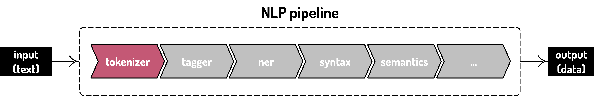
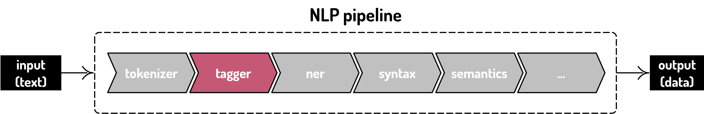
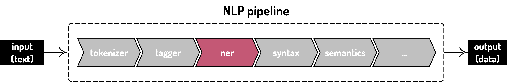
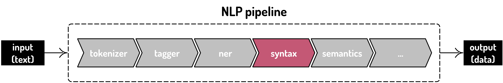
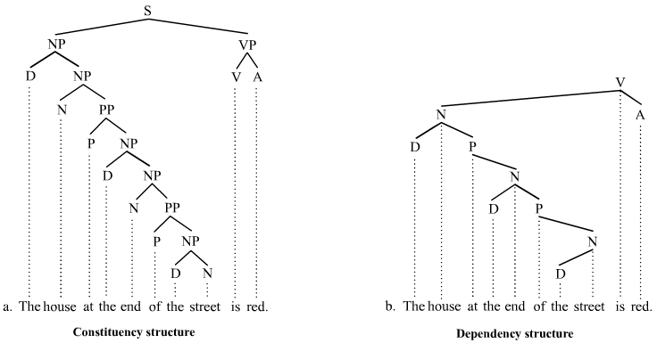
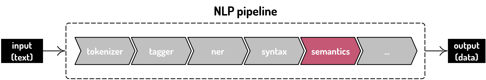

Theory
Scuola/Evento
University of Poitiers
12th February 2020
Twitter: #enexdi2020
Greta H. Franzini
Natural Language Processing (NLP)
Natural Language Processing
(NLP)
Cos'è il TAL?
Processo di elaborazione automatica di informazioni scritte o parlate in una lingua naturale
Metodi automatici di analisi testuale
TAL + umanista
| meccanica | + | interpretazione |
| innovazione | + | tradizione |
Lingue moderne vs. antiche
Moderne
- Parlate
- Grandi gruppi d'uso
- Grande interesse commerciale
Antiche
- Morte
- Piccoli gruppi d'uso: specialisti
- Poco interesse commerciale
Risorse linguistiche
Il TAL si avvale di risorse linguistiche = "raccolte di dati che documentano atti comunicativi umani"
ISLE Glossary of Terms and Abbreviations, 2000
- Corpora
- rappresentativi di una lingua o specialistici
- puro testo o annotati (metadati)
- mono-/multilingue (paralleli/allineati)
- scritti, parlati o misti
- sincronici, diacronici
- Lessici e dizionari
- Tesauri, lessici di valenza, di frequenza, terminologici, etc.
- Ontologie
- rappresentazione formale di concetti
- Grammatiche
Pipeline TAL
l'analisi testuale è complessa
dividere il task di analisi in piccoli subtask risolvibili in modo indipendente da diversi specialisti
Pipeline : modo di progettare un software per cui i risultati di un subtask o modulo alimentano il modulo successivo
One size does not fit all : diverse pipeline per diverse esigenze
Pipeline TAL
- Tokenizzazione
- PoS-tagging e lemmatizzazione
- Analisi morfologica
- Named Entity Recognition (NER)
- Parsing sintattico
- Parsing semantico
- ...
Preprocessing: preparazione dati
Garbage in, garbage out
It is often said that 80% of data analysis is spent on the process of cleaning and preparing the data [...]. Data preparation is not just a first step, but must be repeated many times over the course of analysis as new problems come to light or new data is collected.Hadley Wickham, 2014
Preprocessing: preparazione dati
Formato
Plain Text

Pipeline TAL
Tokenizzazione
Suddivisione del testo in token , i.e. unità di analisi:
caratteri, parole, frasi, etc.
Solitamente tokenizzazione per parola
Tokenizzazione
Token ≠ parola
"mangiarmelo"
=
1 token, 3 parole morfologiche
Tokenizzazione
- Type : un lemma, un tipo di token
- Dizionario = insieme di type
- Token : occorrenza di un type in un testo
"Se oggi seren non è doman seren sarà se non sarà seren si rasserenerà"
Token: 14 Type: 9
Tokenizzazione
Hmmm...
"La Spezia"
1 o 2 token?
U.S.A. · ad hoc · Milano-Verona · l’onda · 18.07.2019
Normalizzazione
Verifica dei dati!

PoS-tagging e lemmatizzazione
PoS-tagging : etichettatura linguistica (PoS = Part of Speech)
Lemmatizzazione : riduzione di una forma flessa di una parola alla sua forma canonica, detta lemma (previo PoS-tagging)
PoS-tagging e lemmatizzazione
Tagset : insieme chiuso (set) di etichette (tag) delle parti del discorso usato per annotare il testo
- Parti del discorso:
- sostantivo, verbo, aggettivo, avverbio, articolo, pronome, preposizione, congiunzione, interiezione
- Parti variabili del discorso:
- nome comune/proprio, aggettivo dimostrativo, pronome personale/relativo, etc.
PoS-tagging e lemmatizzazione
Diversi tagset
=Problema di interoperabilità
Standard : Universal Dependencies (17 tag)
PoS-tagging e lemmatizzazione
Metodi
- Rule-based
- Approccio razionalista (intuition based), segue delle regole (supervised)
- Language-dependent
- Molto usato fino agli anni '90
- Data-driven
- Approccio empirista (probabilistic), impara le regole (unsupervised)
- Language independent
- Preso piede dalla seconda metà degli anni '90
- Si avvale di dati annotati
- Ibrido
- TreeTagger
PoS-tagging e lemmatizzazione
TreeTagger
- Tagger fra i più utilizzati
- Supporto per molte lingue, moderne e antiche
- Modelli statistici addestrati (parameter files) gli permettono di stimare la probabilità di transizione da un PoS all'altro
PoS-tagging e lemmatizzazione
Cosa vuol dire addestrare un modello TreeTagger:
- Di che file ha bisogno in input (vedi sito)
- Corpus annotato con PoS e lemma
- Lessico (dizionario)
- Tagset
- What the output looks like
PoS-tagging e lemmatizzazione
Diversi modelli e tagset
"I sensali schioccavan le fruste;"
(Adolfo Albertazzi, Il camiciotto rosso, 1918)
TreeTagger Stein - 38 tag
I DET:def il
sensali NOM sensale
schioccavan VER:impf schioccare
le DET:def il
fruste NOM frusta
; PON ;TreeTagger Baroni - 52 tag
I ART il
sensali NOUN sensale
schioccavan VER:fin schioccare
le ART la
fruste NOUN frusta
; PUN ;PoS-tagging e lemmatizzazione
Ambiguità
TreeTagger (Stein)
alcuni PRO:indef alcun|alcuniTreeTagger (Baroni)
alcuni DET:indef alcunPoS-tagging e lemmatizzazione
Unknown
Possibili motivi : token non riconosciuto, tokenizzazione problematica, sporcizia nel testo (e.g., OCR), ...
TreeTagger (Stein)
"l' ombra del giqante"
l VER:impe <unknown>
' PON '
ombra NOM ombra
del PRE:det del
giqante NOM <unknown>"l'ombra del gigante"
l' DET:def il
ombra NOM ombra
del PRE:det del
gigante NOM gigantePoS-tagging e lemmatizzazione
Omografia
Un lemma può avere più PoS
TreeTagger (Stein). Fuori contesto:
"faccia"
faccia NOM facciaPoS-tagging e lemmatizzazione
Omografia
TreeTagger (Stein). In contesto:
"Ha una brutta faccia "
Ha VER:pres avere
una DET:indef una
brutta ADJ brutto
faccia NOM faccia"Non so come lei faccia "
Non ADV non
so VER:pres sapere
come CON come
lei PRO:pers lei
faccia VER:cpre farePoS-tagging e lemmatizzazione
Omografia
TreeTagger (Stein). Attenzione però! Sempre in contesto:
"Non so come faccia "
Non ADV non
so VER:pres sapere
come PRE come
faccia NOM facciaPoS-tagging e lemmatizzazione
Omografia
TreeTagger (Stein). E ancora in contesto:
"non so con che faccia faccia questa domanda"
non ADV non
so VER:pres sapere
con PRE con
che PRO:rela che
faccia VER:cpre fare
faccia VER:cpre fare
questa PRO:demo questo
domanda VER:pres domandarePoS-tagging e lemmatizzazione
Performance
Alcuni strumenti e modelli più performanti di altri
TreeTagger (Stein)
finché CON finchéfinchè CON finchèTreeTagger (Baroni)
finché CON finchéfinchè VER:fin <unknown>PoS-tagging e lemmatizzazione
Dominio
Un tagger addestrato sull'italiano di Dante (XIII sec.) non è adatto all'analisi di italiano contemporaneo e viceversa
- Esempio sull'italiano di Dante (XIII sec.):
- TextPro addestrato su italiano contemporaneo raggiunge un'accuratezza del 72%
- TreeTagger e Stanford CoreNLP addestrati su italiano delle origini raggiungono accuratezze del 90% e 92% rispett. (Basile e Sangati, 2016)
Analisi morfologica
PoS-tagging può estendersi ai tratti morfologici
L'analisi morfologica assegna tratti morfologici alle forme:
- PoS
- genere, numero, persona, modo, tempo, caso, grado, diatesi, etc.
Analisi morfologica
E.g. DanteSearch corpus: 2882 tag!
Named Entity Recognition (NER)
Processo di identificazione o estrazione di entità volto a trovare e classificare ogni elemento presente in un testo in categorie predefinite, e.g., persone, organizzazioni, luoghi, eventi, quantità, valute monetarie, percentuali, etc.
Si avvale di tokenizzazione, POS tagging, regole per l’uso delle maiuscole e altre funzioni TAL.
Parsing sintattico
Analisi delle dipendenze fra parole e della struttura della frase
Il parsing viene effettuato da un parser
Parsing sintattico
Parser sintattico si avvale di dati annotati o treebank = corpus annotato a livello sintattico. Solitamente include:
- Lemmatizzazione (disambiguata)
- Tratti morfologici (disambiguati)
- Annotazione sintattica
- Parole piene sono connesse attraverso dipendenze
- Parole vuote dipendono dalla piena che modificano
- Segni di punteggiatura dipendono dalla testa della proposizione o del sintagma
Parsing sintattico
Treebank di due tipi
A costituenti A dipendenze 
Parsing semantico
Processo di assegnazione di un significato, un senso, alla struttura sintattica corretta e, di conseguenza, all'espressione linguistica.
Parsing semantico
Parsing semantico comincia con l'analisi delle relazioni fra parole. Questo richiede una conoscenza di:
- gerarchie lessicali, e.g. iperonimia, iponimia, meronimia, olonimia, antonimia, sinonimia, etc. (WordNet). I sensi/concetti sono lessicalizzati per gruppi di sinonimi (synset).
- connotazione (semiotica) e collocazione, ovvero la combinazione di parole che occorrono spesso con una parola, e.g. idiomi, metafore o similitudini come "bianco come un cadavere."
Esempi di parsing semantico:
- Machine Translation
- Semantic role labeling (a.k.a. shallow semantic parsing): processo di assegnazione di etichette semantiche a parole o frasi. Le etichette indicano il ruolo semantico delle parole e delle frasi in un contesto più ampio, e.g. agente, fine e risultato.
TAL per italiano delle origini
Come siamo messi?
...non benissimo... perché?
Perché i dati (annotati) non sono accessibili = non si possono addestrare altri modelli o strumenti di analisi (legalmente...)!
Strumenti
Italiano
TreeTagger
- Casual TreeTagger (GUI for MAC)
- Ciarán Ó Duibhín (GUI for Windows)
NLP in locale
- Tint: Pipeline NLP
- ItaliaNLP: Pipeline NLP
- NLTK: Natural Language Toolkit
- SpaCy: Pipeline NLP
- OpenNLP: Pipeline NLP
- UDPipe: Pipeline NLP
- Orange Text Mining
- TextPro
NLP sul web
- Text Analysis Online
- Voyant tools: Text analysis
Annotazione linguistica
- CATMA: Textual Markup and Analysis
Tutorial e mailing List
Tutorial
Mailing list
Risorse testuali
Italiano delle origini